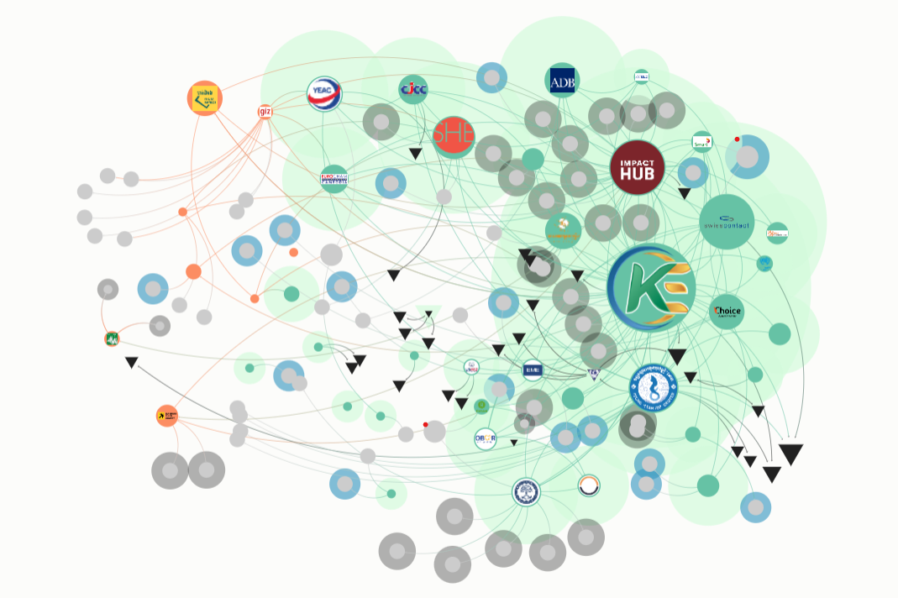
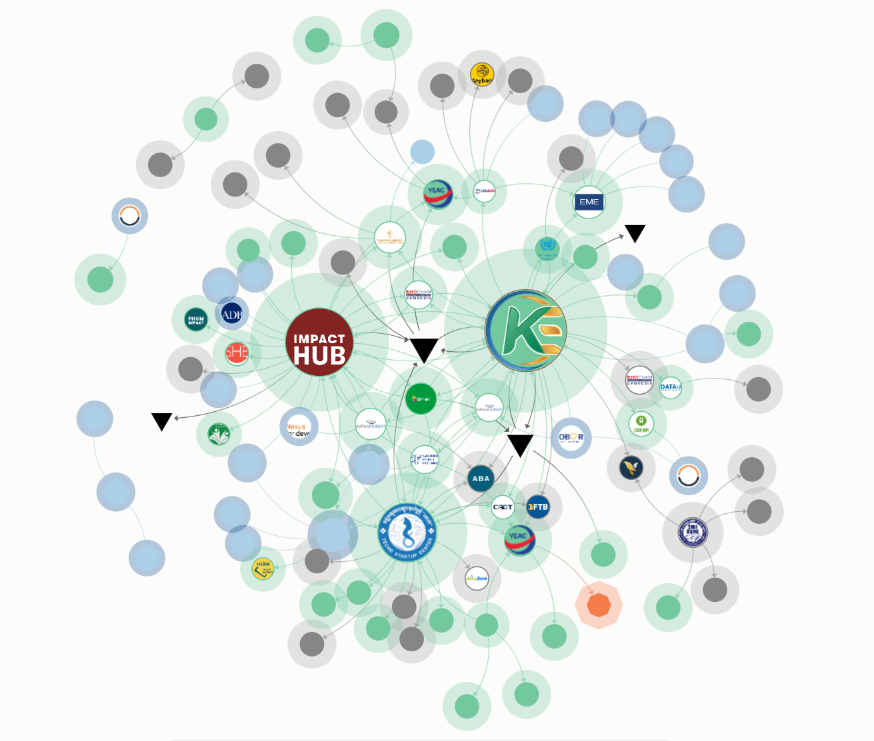
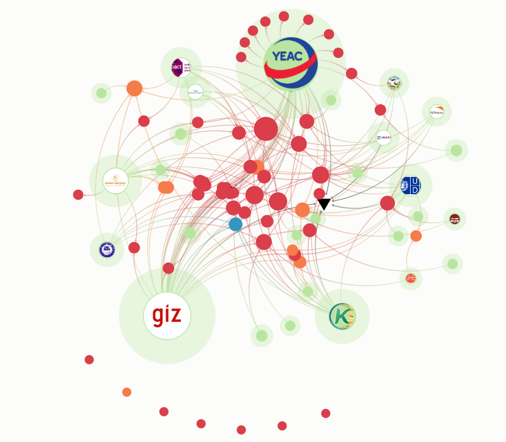
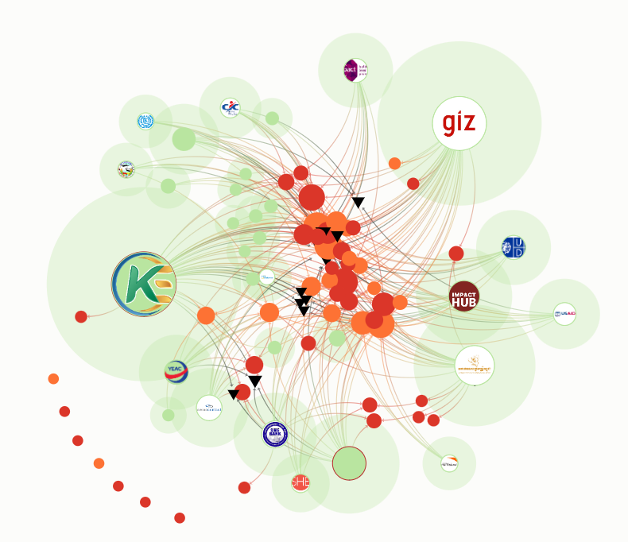
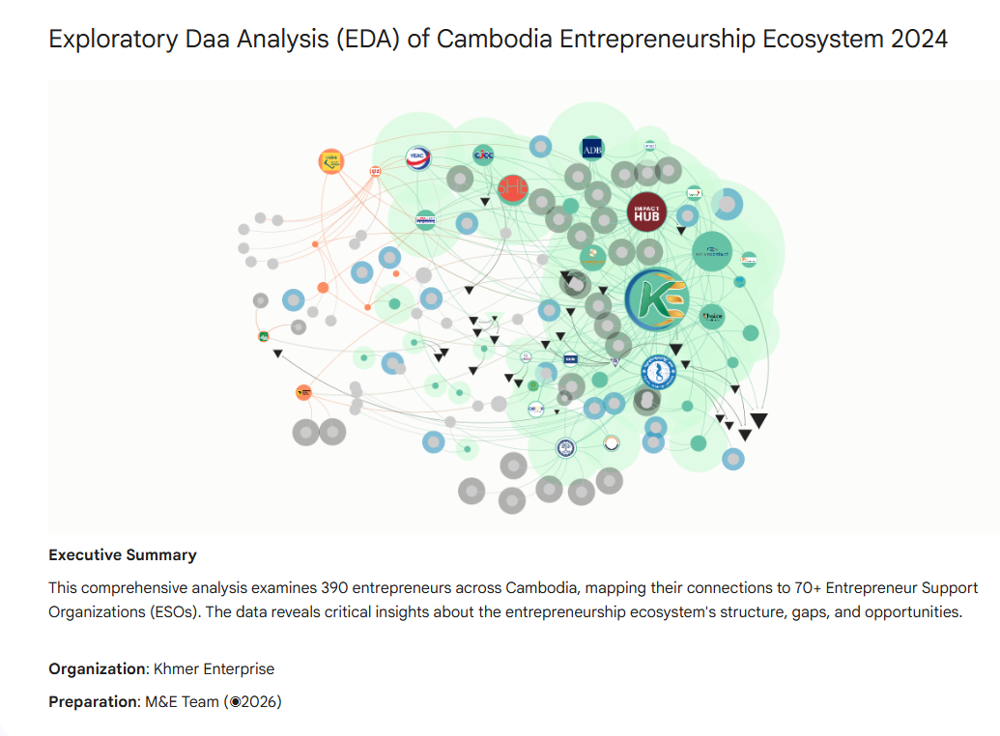

Ecosystem Mapping
Kumu Ecosystem Maps
Interactive network maps across Cambodia · Click "Open in Kumu" to explore each map

Overall Ecosystem Connection
Full ESO connection map across Cambodia · All nodes and inter-organisational relationships at national level
Open in Kumu

Phnom Penh Ecosystem
SME ecosystem connections in Phnom Penh · Capital city's entrepreneurship support network and stakeholder relationships
Open in Kumu

Siem Reap Ecosystem
SME ecosystem connections in Siem Reap · Tourism hub's entrepreneur network and supporting organisations
Open in Kumu

Battambang Ecosystem
SME ecosystem connections in Battambang · Northwest city's growing entrepreneurship network and key stakeholders
Open in Kumu
Notebook
Exploratory Data Analysis
In-depth statistical analysis of the 2024 SNA survey data · Python · Google Colab
Jupyter Notebook · Google Colab
SNA 2024 — Exploratory Data Analysis
Full statistical exploration of 390 entrepreneur survey responses across Phnom Penh, Siem Reap, and Battambang. Covers distribution profiling, ESO gap modelling, funding pattern analysis, mentorship network statistics, gender breakdowns, and city-level comparisons.
Google Colab
Python
Pandas
Matplotlib
Seaborn
390 Records
390
Data Points
3
Cities
15+
Variables
8+
Sections

Business Intelligence
Looker Studio Dashboard
Live interactive data dashboards · Google Looker Studio · KE Ecosystem Analytics 2024
Google Looker Studio · Live Dashboard
KE Ecosystem Intelligence Dashboard
An interactive business intelligence dashboard visualising key metrics from the 2024 SME ecosystem survey. Explore city-level breakdowns, ESO service gaps, funding landscape, mentorship coverage, and gender distribution — all with dynamic filters.
Multi-page Report
Comprehensive dashboard across multiple views
Live Data Filters
Filter by city, sector, gender, and more
Interactive Exploration
Click-through charts and drill-down capability